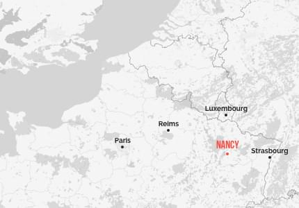

Welcome to the Kick-Off Meeting
Join us in Nancy, France !!
Event Details
This kick-off meeting marks the beginning of an exciting new project aimed at strengthening the role of universities in fostering green transitions within the plastic industry. By enhancing research and technological transfer capabilities, this initiative seeks to build sustainable collaborations between academia and socio-economic stakeholders in Colombia, Argentina, and Chile, promoting innovative circular economy practices and impactful recycling interventions. Through dynamic knowledge exchanges and progressive technology transfer, we aim to document valuable insights and develop interdisciplinary strategies that benefit both the global South and the European Union.
- Date: March 25-28 / 2025
- Time: 9:00 - 17:00
- Location: Lorraine Fab Living Lab 49 Boulevard d’Austrasie, Nancy, France
The Lorraine Fab Living Lab® (LF2L®) is a platform for innovation acceptability and prospective usage evaluation supported by Engineering School ENSGSI and ERPI Laboratory of Université de Lorraine. It supports the creation and achievement of results through an established process based on the usage paradigm, bringing together advanced, complementary tools in a single space. More information
Planning
We present a tentative programme. But, we are working in the construction of the final one:
Organizers
Practical information
The University is located on the heart of the Nancy city. Please find the nearest public transportation stops below.

Lorraine is a region renowned for many good things: on top of its exceptional natural sites, Lorraine is also an economic and tourist hub, with several sites listed as UNESCO World Heritage Sites. As a region of festivals, culinary delights and innovation, Lorraine has many surprises in store for you.
Lorraine is also firmly committed to the 21st century. Indeed, it has successfully diversified to become a key player in innovation and know-how. In 2019, Metz and Nancy were granted the «French Tech» label.
In addition to its vibrant cities and fast and modern public transport, the region has a proud reputation for sport, with the home of leading football, handball.Lorraine is a region where it is good to live, study,… and have fun!
A region at the crossroads of Europe, next to Luxembourg, Belgium and Germany. Located at the heart of the Greater Region, you’ll be able to travel to Belgium, Luxembourg and Germany easily. Within one hour and a half from Paris by TGV, you’ll have the opportunity to pay a visit to the French capital.Our cities quickly give way to peaceful and beautiful rural landscapes. Between nature and historical heritage, Lorraine is the ideal place to live in.
- A traditional center for science, technology and culture.
- Capital of the Dukes of Lorraine
- The cradle of Art Nouveau.
- The worldwide known Place Stanislas, UNESCO monument and “the most beautiful French monument in 2021”
- French gastronomy and local specialties
To consult all the transportation options consult the following information from the Tourism Office: Transportation to Nancy